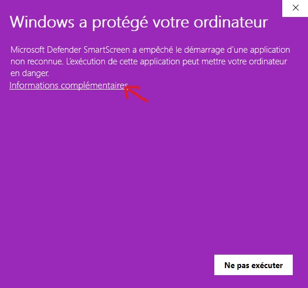
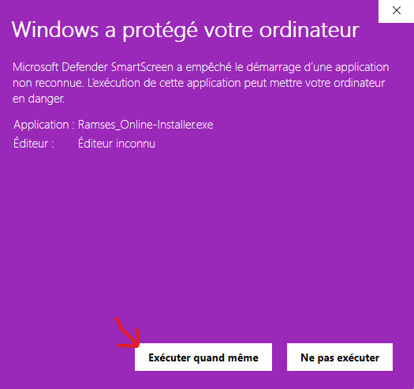
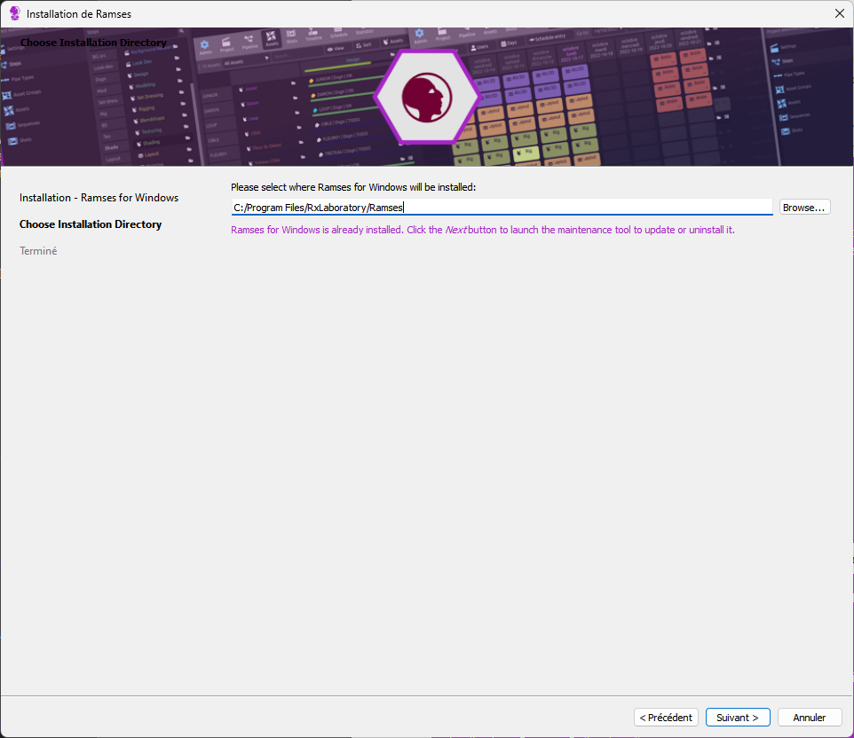
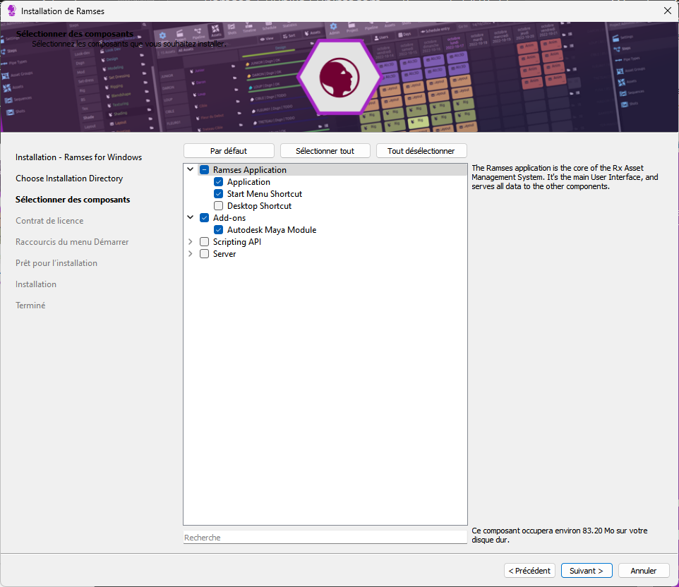
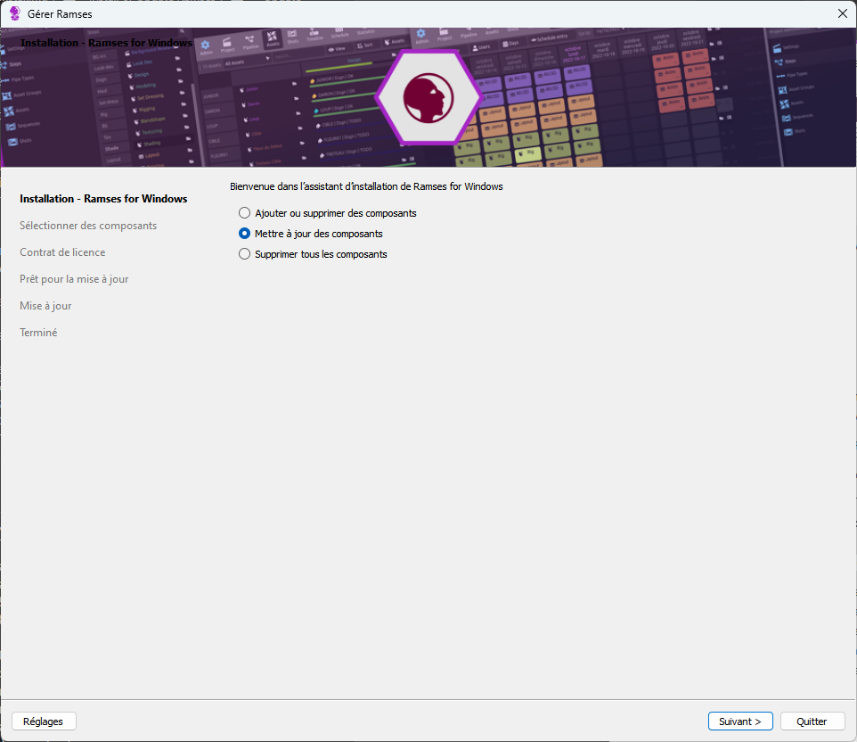

Install or Update Ramses
First installation / Re-Installation
Follow these instructions if you’re installing Ramses for the first time, or if something is not working correctly and you’re trying to clean/fix everything.
-
Download the Ramses Installer. Use exclusively this link, do not use the public links available on rxlaboratory.org: you have an exclusive access to this installer to make things simpler for you.
-
Make sure Ramses is not already installed. To be sure, go to the standard installation path:
C:\Program Files\RxLaboratory\Ramses. If this folder exists and contains some files, close Maya and remove this folder before re-installing Ramses. -
Run the installer you’ve downloaded. The Windows User Access Control may prevent the execution of the installer, in this case just click the “more info” link to run it anyway.
  -
Follow the steps of the installation process. Do not change the default installation path and don’t forget to install the Maya Add-on too!
 
{kind=link}
{kind=link}
{kind=link}
{kind=link}
That’s all, the Ramses App should now be available in the Windows Start Menu and it should be available in Maya.
Update
When running the Ramses application or using the Maya Add-on, there may be a popup window to warn you an update is available; You will also be notified through your Discord server.
In this case, it is important to update Ramses without waiting.
-
Do not click the Download button from the Ramses application or the Maya Add-on, as they’re public links, but we’re using a private and exclusive installer.
-
Instead, open the Ramses Maintenance Tool. You should find it in the Windows Start Menu. If that’s not the case, you should find it in the default installation folder:
C:\Program Files\RxLaboratory\Ramses. -
In some cases, after a Windows update for example, the maintenance tool may not work properly. In this case, follow the procedure described above in First installation / Re-Installation. Otherwise, just select update components in the maintenance tool. In some cases, some components may be disabled: that means you’ll have to run the update procedure twice because the maintenance tool can’t update all components at once.

{kind=link}